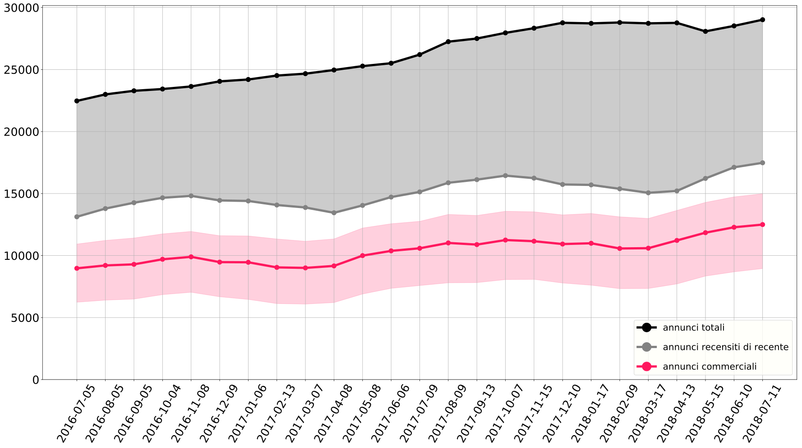
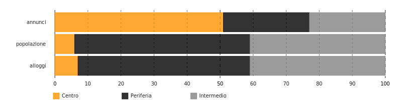

Roma
InsideAirbnb Infokit · 2018-07-11
Questo bollettino illustra gli ultimi dati sulla presenza di Airbnb a Roma. L'obbiettivo è di fornire spunti di riflessione, basati sui dati, a attivisti locali, ricercatori, attori politici e cittadini interessati ad approfondire l'impatto della piattaforma sulla città di Roma. In conclusione al pezzo, si può trovare una bibliografia con ulteriori spunti di ricerca e una sezione metodologica per approfondire come è stata fatta la presente analisi.
Scarica il report in PDF
English version
I numeri di Airbnb a Roma
29016 annunci totali
64% annunci è per case intere
51% è di un host che affitta più case o stanze (mulithost)
In data 2018-07-11 risultano presenti su Airbnb ben 29016 annunci per stanze o appartamenti nel Comune di Roma.
Il 64% degli annunci pubblicizza l'affitto di una casa intera, e non una stanza. Di tutti i 29016 annunci, almeno 17480 possono definirsi attivi, avendo ricevuto una recensione - e dunque una prenotazione - negli ultimi 6 mesi. In rapporto alla popolazione e allo stock abitativo locale, il numero totale di annunci suggerisce che ci siano circa 1 annunci ogni 100 residenti, e 2 annunci ogni 100 alloggi.
Fonte: InsideAirbnb

10% più annunci rispetto stesso periodo dell'anno scorsoRispetto allo stesso periodo dell'anno scorso, gli annunci presenti sulla piattaforma per la città di Roma sono aumentati di 2811 unità (crescita del 10%).
45% annunci è prenotato 60+ notti l'annoSulla base delle recensioni lasciate dagli ospiti e del fatto che Airbnb stessa ha definito come 3.6 notti la lunghezza media di un soggiorno a Roma, si stima inoltre che il 45% degli annunci, ovvero 13073, sia stato occupato per più di 60 notti l'anno.
Fonte: InsideAirbnb
San Francisco è stata una delle prime città a studiare il fenomeno di Airbnb e l’impatto dell’economia da esso promossa sul tessuto urbano cittadino. Nel report del San Francisco Budget Analyst’s Office, si procede a conteggiare il numero di annunci e host che utilizzano Airbnb in maniera definita “commerciale”. Nel report, si definisce come commerciale un annuncio effettivamente prenotato per più di 58 giorni l’anno, se si tratta si un annuncio per una casa/appartamento intero; o per più di 88 giorni l’anno, nel caso si tratti di un annuncio per una stanza. Il ragionamento dietro tale demarcazione è che, dato il tasso di occupazione al 50% suggerito da Airbnb, questi annunci sono di fatto attività non-occasionali, gestite come imprese, prenotabili tutto l'anno o quasi, e non occupabili da residenti. 43% annunci commerciali A Roma, utilizzando questa definizione, il 43% degli annunci può essere definito “commerciale”.
Distribuzione geografica ineguale
Gli annunci non sono distribuiti uniformemente nel territorio del Comune. Il 51% si trova nel, mentre solo il 23% nelquartieri intermedi e il 26% nelquartieri periferici.
Fonti: InsideAirbnb, Comune di Roma (popolazione residente al Dic. 2017), ISTAT (dati alloggi, censimento 2011)

Nel di Roma
8 annunci ogni 100 residenti
10% degli alloggi è su Airbnb
In rapporto agli abitanti, questo significa che nel ci sono 8 annunci di Airbnb ogni 100 residenti. Questo numero si ferma a 1 nelquartieri intermedi e a 1 nelquartieri periferici.
In rappporto allo stock abitativo totale, vuol dire che circa il 10% degli alloggi del è su Airbnb.
Le case intere destinate al turismo e non ai residenti, ovvero gli annunci per una casa intera affittati per più di 60 notti l'anno, sono 9619 (33% del totale annunci). Di queste, il 62% - 5987 case/annunci - nel.
Fonte: InsideAirbnb

In confronto, questa è la distribuzione geografica del numero di strutture e di posti letto disponibili nel Comune, in strutture ricettive regolari, iscritte nell'elenco delle attività ricettive alberghiere e extralberghiere del Comune. (Notare le diverse scale di intensità colore nelle tre diverse mappe.)
Queste immagini sono utili come spunto per approfondire quanto Airbnb abbia di simile o di diverso, rispetto alle strutture tradizionali, sia in termini quantitativi (annunci Airbnb sono di più o di meno delle strutture ricettive?) che in termini qualitativi (distribuzione geografica si assomiglia o no?). Capire questi aspetti è un primo passo per studiare l'impatto di Airbnb su residenti e abitazion disponibili, a livello di quartiere. Per esempio, se gli annunci su Airbnb sono geograficamente distribuiti nelle stesse zone degli hotel tradizionali, vien da chiedersi quanto la piattaforma possa contribuire a quel turismo "sostenibile" di cui si vanta. Al contrario, se gli annunci invadono quartieri residenziali e solitamente non turistici, bisogna domandarsi quali siano (o saranno in futuro) le conseguenze di questa presenza per gli abitanti del posto, in termini di dinamiche di quartiere, prezzi degli affitti e coesione sociale.
Distribuzione dei ricavi poco condivisa
Secondo Airbnb, un host romano che affitta un appartamento intero per 2 ospiti, guadagna in media €1112 al mese, ovvero €13334 l'anno.
I dati di InsideAirbnb sembrano confermare un simile valore mediano, ma allo stesso tempo permettono anche un'analisi più dettagliata della distribuzione delle risorse e degli equilibri nell'economia “condivisa” sostenuta dalla piattaforma. Tale analisi suggerisce che i ricavi generati non siano affatto distribuiti in maniera uniforme tra gli utenti della piattaforma, ma che pochi host concentrino il grosso del guadagno, in maniera quindi ben poco “condivisa”.
Considerando solo gli annunci attivi almeno una volta negli ultimi mesi, secondo i dati di InsideAirbnb, il ricavo annuale mediano di un host è stimato a €8666, mentre quello medio a €15626. €8666 il ricavo annuo mediano per host (stima) Ci sono ovviamente differenze geografiche: il ricavo mediano nel per una casa è di €11285, mentre scende a €5779 nelquartieri intermedi e a €6010 nelquartieri periferici. A margine, va sottolineato che queste sono solo stime basate sui giorni affittati tramite Airbnb, ed escludono quindi eventuali ricavi provenienti dall'affitto dello stesso appartamento su altre piattaforme (come Booking).
139 il numero di annunci dell'utente con più annunciI valori mediani e medi per annuncio offrono una visione limitata della realtà; ci sono infatti molte distinzioni da fare. Già la discrepanza tra valore mediano e valore medio ci suggerisce come i ricavi non siano distribuiti in maniera equa, ma ci sia una minoranza con molti più ricavi degli altri. Ed è così - basti considerare, per esempio, che il ricavo massimo annuale per un host è di €1368677 e che un host arriva ad avere 139 annunci.
Su Airbnb, il 5% degli host con più annunci possiede il 23% degli annunci totali e il 5% degli host con il più alto profitto vede entrare nelle proprie tasche il 40% del totale generato dagli annunci su Airbnb a Roma. Il due grafici seguenti provano a illustrare questa distribuzione: considerate che tutti i pallini blu scuro, messi assieme, coprono il 95% degli host.
Fonte: InsideAirbnb

Fonte: InsideAirbnb

21% host controlla il
51% degli annunciTali valori sono possibili perchè, di fatto, sulla piattaforma abbondano host che affittano decine e decine di appartamenti, gestendo quello che, più che un tradizionale “home sharing”, sembra una rete di strutture turistiche decentralizzate attraverso la città. Il 21% degli host controlla il 51% degli annunci. Le seguenti tre mappe mostrano la distribuzione degli annunci dei tre host che gestiscono il più alto numero di annunci.
La seguente tabella contiene invece i dettagli dei 10 host con più annunci Airbnb a Roma. Leggendo le descrizioni, quanti assomigliano al tipico host descritto da Airbnb, ovvero un privato che affitta i propri spazi per condividerli con i suoi ospiti?
| Nome | Descrizione Host | Annunci Totali | Annunci per Appartamenti |
|---|---|---|---|
| Bettina | Hello! I’m Bettina and I work for Halldis, a 3-year experience property management company specialized in short-term rentals in several locations, such as Milan, Rome, Florence, Naples, Bologna, Paris, Bruxelles and many more. All the apartments we manage are finely furnished, ready-to-use and located in the most attractive areas of the city. In Halldis, we have thousands of Airbnb guests every year! Feel free to ask any additional information, my colleague Alexsandra (https://www.airbnb.it/users/show/115557) and I will be at your disposal to find the most suitable apartment for your needs. | 139 | 139 |
| Emiliano & Maria | WonderWhereToStay: tight knit team based in Rome who have made it our mission to provide our guests with the most charming, unique and cosy homes in Rome. We are constantly looking for new ways of providing our services and sharing our love for Rome, the most recent of which is Wonder Where To Stay. To us hosting is a way of letting the world come a little bit closer to Rome and vice versa, because living a city and experiencing its ways also means bringing something of your own into the colourful mix. We live and love in Rome and know its every nook and cranny; inside knowledge we will gladly share once you arrive, to make sure you don't miss a single bit of all the wonders. Many of our recommendations will be regarding the food, which is (obviously) essential. We take this basic necessity very seriously and consider it one of the best ways to get to know a culture and its ways. We are always available for any requests regarding Rome, individual interests and wishes, our apartments or something different entirely; we will do everything we can to make our guests wishes come true. Naturally we don't live confined in an oil lamp, but enjoy a lovely home like anyone else, which is why we put great effort in making sure our apartments are always in tip top shape, the way we would expect them to be for ourselves and our family and friends. | 107 | 107 |
| Lorenzo | Hi all, I am Lorenzo, I am 32 and I work in the real estate environment. I like travel and meet up people from all over the world. I fluently speak Italian, French, English and a bit of Portuguese. I really hope to see you in Rome and to help you in enjoying all its secret spots. It will be my pleasure to give you all the tips for nice places and restaurants. I will be here for any assistance during your stay. See you soon. Lorenzo, | 74 | 73 |
| Peter | 72 | 72 | |
| Alessandra - Interhome | Hi, my name is Alessandra and I'm a part of the INTERHOME Service Team. My colleagues and I are happy to take care of all your questions and wishes. So either me or one of my colleagues will answer you. We'll gladly help you during your travel experience with Airbnb. INTERHOME has been a leading provider of holiday apartments and holiday homes worldwide since 1965. Our strength lies in a close relationship with our customers: We can satisfy just about any request with more than 33. online bookable holiday homes and apartments in more than 31 countries. We welcome and look after our guests on site and offer a comprehensive service. We're looking forward to welcoming you! | 66 | 66 |
| Suites & Apartments | I'm working for several years in the field of accommodations for short term only for tourists, the Agency's name is Suites & Apartments Roma. . What I would like to offer to my potential guests is the possibility to have a relaxed holiday: I work with a team always ready to answer to any questions and give assistance 24 hrs on 24 hrs, to make your stay unique, unforgettable and thoughtless. In addition to a customers service, together with my co-workers, we also organize airport transfer services and luggage store. Our life motto is "be a cheerful person and luck will help you". So what are you waiting for? Contact us :) | 57 | 47 |
| Sweet Inn | We are Sweet Inn and we offer a unique hospitality experience. We have over 4 stylish apartments for vacations and business trips in 1 incredible European cities. We’ve hosted thousands of guests since 214 - so rest assured, you won’t have any unpleasant surprises. Spoiler Alert: Our apartments are professionally designed for the ultimate comfort - heavenly beds, the fluffiest towels, toiletries by Nuxe, a Nespresso machine, super-fast WiFi and tons of other perks; trust me, you’ll notice the difference. Two more things you should know about Sweet Inn: We have a City Lobby and a local team in every city that will take the best care of you; we’ll even personally meet you at the apartment to show you in. And we’ll help you make the most out of your stay in Rome with tips only a local would know. We also offer incredible services to upgrade your stay - airport transfer, housekeeping, full fridge, private chef and many more. One last thing, download our App after booking, it’s really great; it will make your experience so much smoother. | 50 | 50 |
| Ottavia | 50 | 50 | |
| Federico | I love sports, movies and traveling around the globe. I´d be very happy to host you! | 49 | 48 |
| Lele | 47 | 47 |
Scorrendo le descrizioni dei profili dei vari host su Airbnb, ci si accorge che alcune sono strutture ricettive tradizionali, come Bed & Breakfast. Strutture che sono sempre esistite anche prima di Airbnb e che utilizzano la piattaforma per pubblicizzare la propria attività online. Airbnb è per loro quindi un po’ come Booking o Expedia: un modo come un altro per offrire il proprio servizio, nulla a che fare con l’economia condivisa. Diversi altri profili rientrano invece nella categoria di booking managers e agenzie immobiliari: attività professionali che gestiscono appartamenti da affittare ai turisti per conto dei propri clienti. Clienti che di romano e locale magari hanno ben poco, se non una o più case vuote da affittare a turisti. Come si può evincere dalle descrizioni di alcuni di questi “host”, talvolta nemmeno l’agenzia o l’intermediario è davvero del luogo, ma opera in tutta Italia o addirittura in tutta Europa o nel mondo. L’agenzia fa così da prestanome all’annuncio, aggiungendo un livello di ambiguità e occultando qualsiasi informazione identificativa sul proprietario - dati che invece potrebbero essere utili anche alle autorità per fini fiscali e di controllo. Alcuni degli host che operano in questo campo lo fanno in maniera dissimulata, gestendo decine e decine di appartamenti ma avendo un profilo in cui ci si presenta come un nome proprio, da privato cittadino.
C'è chi punta il dito contro queste agenzie, accusandole di concorrenza sleale o abusivismo. Senza nulla togliere a queste critiche, il problema di questi "mega host" non si riduce a questo. L'abusivismo e l'evasione fiscale ci possono essere sia negli annunci gestiti da un'agenzia che in quelli postati da un singolo privato. Le problematicità specifiche della presenza di "mega-host" sulla piattaforma si possono ascrivere a grosso modo in due tipi, che riguardano la sottrazione delle case ai residenti (1) e i rapporti di potere interni a quest'economia (2).
Innanzitutto, queste agenzie rendono più facile l'affito turistica, e quindi lo incentivano a scapito di quello residenziale a lungo termine. Questo innanzitutto perchè si occupano di tutte quelle incombenze legislative, burocratiche e amministrative che potrebbero altrimenti dissuadere i proprietari di immobili dall'intraprendere questa strada. L'unione tra Airbnb (che rende immediato l'incontro di domanda e offerta e offre tutele in termini di pagamenti) e l'agenzia (che si occupa di tutte le possibili difficoltà pratiche del gestire l'affittanza turistica), ha abbattuto quasi ogni ostacolo affinchè l'affitto residenziale sia più conveniente di quello turistico. Così, soprattutto nelle zone altamente turistiche, dove i flussi vi si riversano pressochè illimitati, a frenare questa la conversione da affitto residenziale a locazione turistica sono rimasti solo gli eventuali scrupoli morali del proprietario.
In secondo luogo, queste agenzie accentrano il grosso dei profitti (e dunque anche portano nelle tasche di Airbnb il grosso dei sui ricavi), trovandosi così ad occupare una posizione dominante nel mercato. Il rischio è che possano usare questa posizione per dar vita a situazioni quasi di monopoli, a cartelli più o meno espliciti, o a altre misure per fissare a proprio vantaggio i prezzi degli annunci.
7% il ricavo generato da host non-commerciali.Alla luce di tutto ciò, è chiaro che sulla piattaforma si trovano annunci e profili di diverse tipologie, e che l'impatto di ciascuno sulle dinamiche economiche e residenziali locali varia in funzione di questo. Sorge allora la domanda: quanti sono gli host che usano effettivamente Airbnb in maniera non professionale, per affittare quello che probabilemente è il loro luogo di abitazione usuale? Stando agli ultimi dati, solo il 49%, che gestisce il 41% degli annunci totali e che si stima percepisca il 7% dei ricavi totali annui generati grazie alla piattaforma.
Come si vede dal grafico, nonostante siano in molti, gli host non-commerciali generano una parte minima dei ricavi in rapporto al volume totale. Airbnb guadagna in percentuale sui ricavi degli host e dei guest e, se dovesse limitare l'uso della piattaforma solamente a questa tipologia di host, vedrebbe i suoi profitti falciati. Si può ben immaginare dunque quanti pochi incentivi ci siano affinchè Airbnb, di sua spontanea volontà, decida di rimuovere dalla piattaforma imprese professionali che incentivano l'affitto turistico e sottraggono risorse al mercato immobiliare residenziale. Per questo servono regolamentazioni.
Studi e notizie
Italiano
- Agostini; Ilaria, Firenze. Il turismo consuma il diritto alla casa, La Città Invisibile. (2018)
- Agostini; Ilaria, Firenze. L’espulsione della comunità locale in favore del turismo di lusso e del profitto dei pochi, La Città Invisibile. (2017)
- Arata, Giovanni, Elementi per un framework di regolamentazione degli affitti di breve termine, Medium. (2018)
- Bonaccorsi, Manuele; Di Pietro, Lorenzo, AAA Affittasi Italia, Report (RAI3). (2018)
- Ferrara, Ernesto, Case condivise in centro ma ricavi per pochi: così Airbnb ha invaso l’Italia, Repubblica. (2017)
- Fontana, Giorgio, La variabile discriminazione nell’algoritmo di Airbnb, Pagina99. (2016)
- Griswold, Alison, Airbnb non è più l’amico della classe media, Internazionale. (2017)
- Picascia, Stefano; Romano, Antonello; Teobaldi, Michela, The Airification of Cities, LADEST · Università di Siena. (2017)
Internazionale
- Barron, Kyle; Kung, Edward; Proserpio Davide, The Sharing Economy and Housing Affordability: Evidence from Airbnb, NBER - UCLA - USC. (2018)
- Boone, Alastair, There's New Research Behind the Contention that Airbnb Raises Rents, CityLab / The Atlantic. (2017)
- Gurran, Nicole; Phibbs, Peter, When Tourists Move In: How Should Urban Planners Respond to Airbnb?, Journal of the American Planning Association · Routledge. (2017)
- Hill, Steven, The Unsavory Side of Airbnb , The American Prospect. (2015)
- Jamasi, Zohra, Regulating Airbnb and the Short-Term Rental Market. An overview of North American regulatory frameworks, CCPA. (2017)
- Lee, Danye, How Airbnb Short-Term Rentals Exacerbate Los Angeles’s Affordable Housing Crisis: Analysis and Policy Recommendation, Harvard Law & Policy Review. (2016)
- Merante, Mark; Mertens Horn, Keren, Is Home Sharing Driving up Rents? Evidence from Airbnb in Boston, UMass Boston. (2016)
- Samaan, Roy, Airbnb, rising rent and the housing crisis in Los Angeles , LAANE. (2015)
- San Francisco Budget and Legislative Analyst’s Office, Analysis of the impact of short-term rentals on housing, City of San Francisco. (2015)
- Wachsmuth, David; Chaney, David; Kerrigan, Danielle; Shillolo, Andrea; Basalaev-Binder, Robin; , The High Cost of Short-Term Rentals in New York City, Urban Politics and Governance research group · McGill University. (2018)
Note Metodologiche
I dati utilizzati in quest'analisi sono quelli liberamente scaricabili dalla sezione "Get the data" di InsideAirbnb. Questi dati grezzi contengono informazioni su tutti gli annunci che si è riusciti a trovare online in ogni città e su chi siano gli host; sui prezzi pubblicizzati al momento del monitoraggio; sul numero di recensioni presenti per ogni annuncio; sull'indirizzo approssimativo... Non sono dati perfetti perchè non c'è modo di sapere per quante notti l'anno vengono davvero occupati gli annunci, in che periodi esatti o per quanti notti sono resi disponibili seppur non ricevano prenotazioni. Non si può sapere con certezza se un annuncio è di fatto attivo oppure no. Se più annunci sono in realtà proprietà dello stesso host, quando nel profilo virtuale magari risultano nomi diversi. Anche la posizione (e quindi il quartiere) di un'annuncio non è del tutto sicuro, in quanto l'indirizzo esatto viene fornito solo a chi effettua la prenotazione. Si stima che le coordinate pubblicate su Airbnb nella pagina pubblica di un annuncio abbiano una precisione di 0-150 m, cosa che può far sì che stanze o appartamenti nello stesso edificio appaiano in punti diversi o addirittura in quartieri confinanti. . Ancora una volta, si possono solo fare stime, e ogni stima rischia di calcolare al ribasso o al rialzo la vera portata del fenomeno.
I seguente paragrafi provano a illustrare nel dettaglio e con un linguaggio comprensibile il tipo di calcoli che sono stati fatti in questo report e le motivazioni dietro tali operazioni. L'idea è di permettere a chi legge il report di capire i limiti e le criticità delle stime fatte, ma allo stesso tempo di comprenderne la logica (e eventualmente suggerire soluzioni per migliorare il lavoro!). Il messaggio che si vuole provare a trasmettere è che i dati sono sì imprecisi; le stime saranno pure ricche di sfumature e di decisioni soggettive: ma questo non vuol dire che non possano essere alla base di un dibattito collettivo e condiviso sul fenomeno. Anzi, proprio per queste caratteristiche di complessità e incompletezza dei dati, si spera che essi servano come spunto per ulteriori domande e indagini animate dallo stesso spirito di messa in discussione, trasparenza e condivisione.
- Stimare il numero di giorni che un annuncio è stato occupato. Nel suo report, Airbnb ha dichiarato che la durata media di un soggiorno in Italia è di 3.6 notti. Per ogni annuncio, InsideAirbnb fornisce inoltre seguenti variabili prese dal profilo pubblico di ogni annuncio: numero medio recensioni mensili; numero minimo notti prenotabili . Dal numero medio di recensioni mensili si è stimato il numero di prenotazioni effettuate secondo tre diversi scenari:
- Scenario impatto minimo: il 100% degli ospiti ha lasciato una recensione. Il numero di prenotazioni effettuate mensili è dunque uguale al numero di recensioni mensili. Nel grafico "Crescita nel tempo degli annunci su Airbnb", il margine inferiore della fascia color magenta corrisponde con il numero degli annunci che verrebbero considerati commerciali secondo questo scenario. Nel grafico "Distribuzione degli annunci e dei ricavi tra host non-commerciali, Venezia", questo scenario segna il margine superiore della fascia arancione che indica il numero degli annunci e degli host che verrebbero considerati non-commerciali e i loro ricavi, secondo questo scenario
- Scenario principale: il 50% degli ospiti ha lasciato una recensione. Il numero di recensioni mensili è dunque moltiplicato per 2, per ottenere il numero di prenotazioni effettuate. Questo è lo scenario utilizzato in tutto il report se non esplicitato altrimenti. Le motivazioni di questa scelta sono meglio illustrate nella pagina di InsideAirbnb
- Scenario alto impatto: solo il 30.5% degli ospiti ha lasciato una recensione. Il numero di recensioni mensili è dunque moltiplicato per 3.28 per ottenere il numero di prenotazioni effettuate. Le motivazioni dietro questa scelta sono dovute al fatto che tale tasso è quello utilizzato nel report del San Francisco Budget Analyst’s Office per lo scenario ad alto impatto. Nel grafico "Crescita nel tempo degli annunci su Airbnb", il margine superiore della fascia color magenta corrisponde con il numero degli annunci che verrebbero considerati commerciali secondo questo scenario. Nel grafico "Distribuzione degli annunci e dei ricavi tra host non-commerciali, Venezia", questo scenario segna il margine inferiore della fascia arancione che indica il numero degli annunci e degli host che verrebbero considerati non-commerciali e i rispettivi ricavi, secondo questo scenario.
- Se il numero minimo di notti prenotabili è minore di 3.6 (la durata media di un soggiorno qui secondo Airbnb, come scritto nel loro report per Italia):
(numero prenotazioni effettuate l'anno * 3.6)
- Se il numero minimo di notti prenotabili è superiore a 3.6:
(numero prenotazioni effettuate l'anno * numero minimo notti prenotabili)Da notare che la durata media del soggiorno è un dato per il quale non sempre esistono informazioni esatte. Si è proceduto cercando tale dato nei report ufficiali di Airbnb rilasciati di recente. Se si è trovato un numero riferito specificatamente a Roma, si è utilizzate questo. Altrimenti, si è utilizzato il valore di 3.6 notti - quello che Airbnb dichiara essere a durata media di un soggiorno in Italia nel 2017 (ultima data reperita). Questo aggiunge ovviamente un ulteriore margine di errore e approssimazione, ma non si è potuto fare altrimenti. Infine, il tasso di occupazione è stato fissato al 70% dell'anno, in linea con la metodologia usata anche altrove da InsideAirbnb per evitare errori nel caso in cui un host abbia cambiato il numero minimo di notti di recente e solo per qualche mese l’anno (per esempio aumentandolo durante l’alta stagione). È inoltre una misura conservativa, che permette di sottostimare il fenomeno piuttosto che sovrastimarlo.
numero notti prenotate l'anno * prezzo per notteVa notato che i prezzi contenuti nel dataset originale sono in $; sono pertanto stati convertiti in € utilizzando il tasso di scambio di €1.00 = $0.86 (tasso del 03/08/2018)
| localita | gruppo |
|---|---|
| I Centro Storico | Centro |
| II Parioli/Nomentano | Intermedio |
| III Monte Sacro | Intermedio |
| IV Tiburtina | Intermedio |
| IX Eur | Intermedio |
| VIII Appia Antica | Intermedio |
| XII Monte Verde | Intermedio |
| XV Cassia/Flaminia | Intermedio |
| V Prenestino/Centocelle | Periferia |
| VI Roma delle Torri | Periferia |
| VII Appio-Latino/Tuscolana/Cinecittà | Periferia |
| X Ostia/Acilia | Periferia |
| XI Arvalia/Portuense | Periferia |
| XIII Aurelia | Periferia |
| XIV Monte Mario | Periferia |